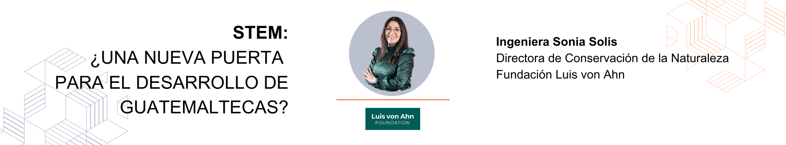

7 STEM: ¿Una nueva puerta para el desarrollo de guatemaltecas?

YouTube: https://youtu.be/x678w7UC59Q
7.1 Entrevista
¿Quién es la ingeniera Sonia Solís?
Soy madre de dos niños, hermana, amiga, esposa, colega, ingeniera industrial con una maestría en derecho ambiental y una especialización en agua y cuencas.
Me gusta leer, explorar, conocer las culturas y eso me lo ha desarrollado también la profesión que hoy por hoy tengo; entonces, parte de mis hobbies creo que también ha sido esa estrecha vinculación entre la parte profesional y la parte personal.
¿Dónde trabaja actualmente?
Actualmente trabajo en la Fundación Luis von Ahn, tengo el privilegio de ser la directora de Conservación de la Naturaleza, que es uno de los programas de la Fundación.
Muy orgullosa, pero sobre todo con un compromiso, en que Guatemala pueda avanzar de mejor forma en proteger y conservar ese capital natural tan importante para el país.
En la fundación hay una variedad de colegas, no solo de la ingeniería, sino de otras ramas de la ciencia que me han acompañado en este proceso.
¿Cómo los conocimientos STEM impacta el trayecto de su carrera profesional?
Cuando decidí ser ingeniera industrial, yo miraba los procesos productivos como un objetivo a alcanzar. Pero en el camino me fui dando cuenta que el conocimiento que la ingeniería te da también te estimula un progreso científico y un progreso tecnológico, esas competencias te van ayudando a desarrollar la carrera y eso es lo que a mí me pasó.
¿Cómo una ingeniera industrial termina en conservación de la naturaleza?, definitivamente desarrolle destrezas blandas que me han permitido incursionar como ingeniera industrial en una ciencia como la biología, por ejemplo; trabajar de una forma multidisciplinaria con agrónomos, biólogos, veterinarios e ingenieros forestales, la habilidad fue trabajar con muchos colegas. Pero también ir captando esa información, que como ingenieros nosotros también sabemos que hay procesos, entra algo sale algo, pero en el tema de conservación hay un proceso y que ese proceso es de largo plazo. Y ahí es donde entra la ingeniería a resolver y crear soluciones basados en STEM, es donde se hace un conjunto en utilizar la lógica, la ciencia, la tecnología, la matemática, las probabilidades, pero como buenas ingenieras tenemos en la mente soluciones y la conservación no es ajena.
A mí se me hace muy fácil planificar, desarrollar la solución y llevarla a cabo, a veces no es tan fácil para otros profesionales. Lo que considero es cómo pones todo el STEM al servicio de las soluciones el país, como la carrera que hemos elegido hoy por hoy pueden crear soluciones o resolver problemas. Pero los profesionales del STEM podemos traer esa ciencia, la tecnología, la lógica para precisamente trabajar en conjunto en las diferentes problemáticas.
Eso es lo que me ha impactado a mí a lo largo de mi trayectoria profesional, tan así que tengo una maestría en derecho. ¿Cómo fui a parar estudiando derecho? es precisamente eso, el STEM me ha ayudado a crear estas destrezas, pero necesito otros conocimientos para poder aplicarlo en el STEM y esa es la variabilidad que te puede dar el STEM.
¿Cómo llega al puesto actual en la Fundación Luis von Ahn?
La fundaciónes es muy reciente, llevamos 1 año y medio o dos operando. Tengo la fortuna de dirigir el área de Conservación de la Naturaleza siendo mujer y te cuento que en la fundación somos cuatro mujeres y el director, Luis von Ahn. Nosotras tenemos los puestos de dirección y gerencia en esa área, un poco más técnica, de aplicación.
Empezaré por contar mi trayectoria. Empecé como estudiante haciendo un EPS en una empresa y ahí me dieron un proyecto de ambiente, me gustó muchísimo, porque era solucionar el desempeño ambiental de una empresa, reducir el impacto ambiental que se producía y eso me da una oportunidad para hacer parte del equipo técnico del Centro Guatemalteco de Producción Más Limpia, que genera soluciones para mejorar el desempeño ambiental del sector privado o de los procesos productivos.
Conozco muchísimos procesos productivos, pero de cara a dar soluciones de mejor desempeño ambiental en agua, residuos sólidos y eso me da una plataforma para luego ser parte del equipo especialista de un proyecto de USAID a nivel regional, donde me tocó dirigir en 7 países la implementación de Producción Más Limpia, pero de gestión de recursos naturales, trabajando con ministerios de ambiente, con universidades, como en el sector privado y luego afortunadamente llego a ser oficial regional de agua dulce en WWF (World Wildlife Fund, en español Fondo Mundial para la Naturaleza), es ahí donde desarrollo mayores habilidades de STEM, porque nos toca solucionar agua, también biodiversidad, gestionar proyectos, trabajar con el sector privado, la cooperación internacional.
¿Qué responsabilidades conlleva ser la directora de Conservación de la Naturaleza de la Fundación Luis von Ahn?
Pues mira, desde reconocer que no sé todo, es parte de lo que todos los profesionales debemos de saber e interiorizar. De esa manera es que yo trato de hacer alianzas estratégicas. Con en el caso de la fundación nosotros hacemos una filantropía basada en confianza y eso quiere decir que confiamos en organizaciones que están haciendo su trabajo en cualquiera de las 3 ramas. Y la responsabilidad mía es identificar a esas organizaciones, a sus líderes y a todos los colaboradores de esas organizaciones, que puedan ejecutar nuestros fondos de una forma responsable y que el impacto sea positivo para las comunidades y para los recursos naturales.
Para mí que Luis esté confiando en mí, para poder materializar su causa, es una responsabilidad tremenda y aún más que ese apoyo, esa contribución llegue realmente a donde están los vacíos y las necesidades. Reconozco que tengo que trabajar con otros profesionales y es la forma en que también he llevado a cabo mi trabajo con responsabilidad, no solo en temas técnicos de conservación, sino que también de gestión, administración y de supervisión. Creo que Guatemala puede avanzar cuando todos tenemos responsabilidades alineadas, pero aquí también son valores alineados en función de la confianza que Luis nos ha dado.
¿Qué hace un ingeniero industrial aquí? Eso es lo que a mí me ha dado el STEM, ser camaleónica y creo poder adaptarme, sobre todo es que siempre estamos tratando de tener conocimiento científico y esa habilidad es sumamente importante, porque si yo no entiendo algo, me explican los expertos, pero luego esta formación lo que te da es adquirir conocimientos para encontrar soluciones, pero también aplicar es responder de dónde viene, por qué, qué puedo hacer y no quedarte solo en la respuesta.
¿Qué tipo de proyectos son atendidos por la fundación Luis von Ahn?
Nosotros apoyamos a organizaciones en equidad de niñas y mujeres y te he de decir que una de las que tiene más importancia es la educación. Reconociendo en que hay una vulnerabilidad muy alta de niñas y mujeres en muchos sentidos, pero la educación definitivamente es importantísimo para la fundación porque es la base para que desarrollemos las siguientes cuatro áreas:
- Educación
- Derechos de la mujer, empoderamiento de la mujer
- Derechos sexuales y reproductivos
- Conservación de la naturaleza
Entonces son 3 áreas, bien distintas, pero cuando hablamos de género o hablamos de mujeres, es transversal en las 3 áreas y por eso es importante para nosotros la equidad de niñas y mujeres de una forma transversal. En las 3 áreas, siempre vamos a hablar de una brecha de género y por eso para nosotros, pues el tema de género es transversal.
Centrándonos en la parte educativa, ¿Cómo se perfila una organización educativa para ser apoyada por la fundación?¿Cuál es el principal objetivo?
Empezando que nosotros como fundación tenemos diferentes criterios para poder considerar una organización en el caso de educación, actualmente estamos apoyando a 6 organizaciones y pues las perfilamos primero en que ellos tengan un sentido y una misión alineada a la equidad de la educación, que sea parte de atender a las poblaciones vulnerables en el país y sobre todo que tengan calidad educativa y que aporten a tener no solo calidad, sino que acceso a educación a las poblaciones más vulnerables en Guatemala.
Las organizaciones de educación son programas educativos en donde hay una metodología de educación mejor que la que ofrece el estado y son colegios que existen. Por ejemplo, tenemos al colegio MAIA, que es un colegio que tiene un objetivo principal en educar a mujeres maya en Sololá, tiene ya un laboratorio de STEM y han tenido toda una metodología para incluir STEM en las mujeres de población indígena en Sololá, con el fin de que puedan cerrar esta brecha de conocimiento y que puedan impulsar e inspirar a sus estudiantes a que estudien carreras STEM. Tenemos un colegio que es “Horizonte sin límite” en El Quiché, con población Ixil y la idea también es que ellos están trabajando para que más niñas se vean beneficiadas; aproximadamente el 68% de su población son niñas y eso no quiere decir que no atienden a los niños porque sabemos que hay que trabajar también con los niños en cambiar esa cultura, pero las que han tenido mayor brecha son las mujeres Ixil y pues estamos trabajando con ello.
Hemos hecho una red de organizaciones que nos permite ir impactando a un poco más de 1300 estudiantes a lo largo y ancho del de del país y esperemos definitivamente que podamos seguir creciendo en tener otras organizaciones.
¿Porqué es tan importante que la educación se dé desde el enfoque STEM?
Desde nuestros colegios definitivamente miras la diferencia de calidad educativa, en el estado las escuelas enfrentan situaciones retadoras, pero en estos modelos de educativos que son ONGs que trabajan para la educación sí se esté implementando el STEM desde pequeñitos. ¿Por qué? Porque es romper esas barreras que se han impuesto en educación tradicional para hacer un énfasis en pilares en ciencia y tecnología e ingeniería, en arte, en matemáticas, porque eso no solo brinda nuevas habilidades, desarrolla habilidades en el cerebro, sino que también en el futuro. Van a tener mejores oportunidades de crecimiento profesional.
El tener acceso a laboratorios, el tener acceso a un proceso de diseño, a tener acceso a tecnología aplicada a ciencias, informática, ciencias puras de una u otra forma también genera habilidades en los chicos de experimentación, de indagación y eso hace una masa crítica de ciudadanos que tengan mejores habilidades para un futuro y dé cara no solo a empleabilidad, sino que a generar empleos que cierren la desigualdad también en el país.
Entonces si desde chiquitos tú les das todo este banco de información y generan las habilidades, vamos a tener jóvenes que van que desde sus comunidades ateniendo los problemas que tienen, van a plantear soluciones reales porque los viven día a día, para que sean parte de la solución y no del problema. Esa es la importancia de la educación y con una visión de STEM, definitivamente creo que ese es el camino.
¿Crees que promover el enfoque STEM en la educación de las niñas y mujeres guatemaltecas hace una diferencia?
Definitivamente que sí, empezando desde que en Guatemala la discriminación y la desigualdad en la mujer es alta. Nuestro análisis de un contexto de por qué hemos decidido nosotros trabajar en lo que trabajamos, es que hay un dato en el Informe de Desarrollo Humano del programa de las Naciones Unidas en 2019, donde Guatemala tiene el índice de desigualdad de género, desarrollo humano y empoderamiento por encima de los promedios regionales y mundiales; o sea, estamos en los promedios de desigualdad más significativos y este informe le da un valor de 0.50 más o menos, el cual es el más alto de América latina. Te puedes imaginar entonces cuando hablamos de desigualdad de género, pues es medir las desventajas en el género en 3 dimensiones en este en este informe salud reproductiva, empoderamiento y trabajo.
Nuestros modelos educativos nos dan mucha esperanza y que estoy segura de que existen otros modelos , pero sobre todo es cómo nosotros, los profesionales, los que hoy por hoy están estudiando los futuros profesionales ya tienen en su ADN el seguir promoviendo el STEM con un enfoque de mujer, porque es ahí donde nosotros podemos tener el poder de abrir oportunidades.
Hay mujeres como Susana Arrechea, por ejemplo, que a mí me parece un trabajo extraordinario lo que ella hace y viene de STEM, así que entonces el valor de cerrar esa brecha, esa diferencia, también va a ser el esfuerzo de todos los ciudadanos y ojalá de los profesionales del STEM, en que las mujeres puedan tener ese enfoque de STEM para desarrollar al país, para desarrollar a sus comunidades, creo que entre más educados estemos mujeres y hombres vamos a entender que el STEM es fundamental para una sociedad con tantos retos como Guatemala y retos en todas las aristas.
Así que es de lo que yo te puedo decir, soy positiva, trato de influir, de inspirar y creo que vamos por el camino, pero nos hace falta todavía empujar la máquina un poco más fuerte entre todos los ciudadanos y los jóvenes tienen un rol sumamente importante en este momento.